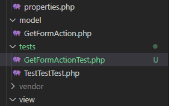
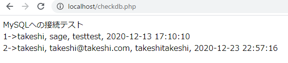
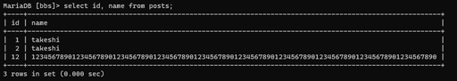

TDDやるぞと言っておきながら投稿機能は先に作っちゃったので、逆に「どういう風に考えておけば先にテストが書けるのか」ということを考察していきたい。
ローカル
リモート
GetFormActionクラスのテストを書くので、GetFormActionTestクラスとなる。test/GetFormActionTest.phpを作成。
（TestTestTest.phpを参考にしたらTestを頭に付けるのかお尻に付けるのか分からなくなってしまった。）

次にGetFormActionTest.phpの中にそのクラスを作り、SaveDBPostDataをテストするメソッドtestSaveDBPostDataを作成。その中で対象のクラスのインスタンスを生成しておく。
x<?phpuse PHPUnit\Framework\TestCase;require('model/GetFormAction.php');class GetFormActionTest extends TestCase{ public function testSaveDBPostData(){ $action = new GetFormAction(); }}ということはテストを書く時点で
などを決めておかないといけないということになる。
ここで思い出したいのが、
という考え方。
今回の「記事投稿」という機能に限って言えば
と分類できる。
正常系はいいとして、異常系はもとより準正常系すら考えていなかったことがここで分かる。
準正常系のテストを考えるということは、「こんな投稿は禁止する」ということを考えることになる。
例えば、以下の投稿はDBにデータを追加しないようにする。
みたいな感じ。メールアドレスに対する制限は・・・ええでしょ別に。
これは難しい。例えば
とか？名前が画像て、意味分からんけど・・・どうやってテストするのかも分からんけど・・・
今回は文字列を受け入れるので、同値分割・境界値分析の考え方は当てはめにくい。ということは逆にこの考え方は数値のような連続性のあるデータを扱う時に使える、ということか。
記事投稿のテストであり、読み出しはまだ実装していない。なので
正常系
SaveDBPostDataを使って記事をDBに保存準正常系
SaveDBPostDataを使って記事投稿を試行falseが返ってくることをアサーションメソッドで確認（違う反応にしても可）異常系
SaveDBPostDataを使って記事投稿を試行めちゃめちゃ書かなあかんやん・・・
xxxxxxxxxx<?phpuse PHPUnit\Framework\TestCase;require('config/properties.php');require('model/GetFormAction.php');class GetFormActionTest extends TestCase{ public function testSaveDBPostDataSuccessful() { // 1. テスト記事データ作成 $action = new GetFormAction(); $testpost = array( 'name' => 'testpost', 'email' => 'hoge@hoge.hoge', 'post_body' => 'これはテストです', 'password' => 'password' ); // 2. 投稿 $action->SaveDBPostData($testpost); // 3. SQL文で直接記事を取得 try { $pdo = new PDO(PDO_DSN, DATABASE_USER, DATABASE_PASSWORD); $pdo->setAttribute(PDO::ATTR_ERRMODE, PDO::ERRMODE_EXCEPTION); $pdo->setAttribute(PDO::ATTR_EMULATE_PREPARES, false); } catch (PDOException $e) { print('Error:'.$e->getMessage()); die(); } $sql = "select * from posts where name = '$testpost[name]'"; $stmt = $pdo->query($sql); $result = $stmt->fetch(); // 4. アサーションメソッドで確認 $this->assertEquals($testpost['name'], $result['name']); $this->assertEquals($testpost['email'], $result['email']); $this->assertEquals($testpost['post_body'], $result['body']); $this->assertEquals($testpost['password'], $result['password']); // 5. 今保存した記事を削除 $sql = "delete from posts where name = '$testpost[name]'"; $stmt = $pdo->query($sql); $pdo = null; }}とりあえずこんな感じ。
MySQLのbbsユーザーにDELETE文の権限を与えていないので、後片付けのところでコケるはず。
MySQLにrootユーザーでログインし以下を打つ。
xxxxxxxxxx> grant delete on bbs.* to bbs@localhost;さらにDBにアクセスするときのパスワードがサーバーの環境変数の中にセットされているので、サーバーを通さずに実行するPHPUnitではパスワードが取得できない（以下の4行目）。
config/properties.php
xxxxxxxxxx<?phpdefine('DATABASE_NAME', 'bbs');define('DATABASE_USER', 'bbs');define('DATABASE_PASSWORD', $_SERVER['PHP_BBS']); ←これdefine('DATABASE_HOST', 'localhost');define('PDO_DSN', 'mysql:dbname=' . DATABASE_NAME . ';host=' . DATABASE_HOST . ';charset=utf8mb4');とりあえずの対応策として、properties.phpをproperties_for_test.phpとしてコピーし、そちらはパスワード直書きとする。（※ファイル命名でキャメルケースとスネークケースが混在しているけどとりあえず細かいことは考えない）
そして.gitignoreにproperties_for_test.phpを追記。
xxxxxxxxxxbbs.code-workspacevendorphpunit.batconfig/properties_for_test.php ←追記
さらに、テストで読み込むファイルを修正。
tests/GetFormActionTest.php
xxxxxxxxxx<?phpuse PHPUnit\Framework\TestCase;require('config/properties_for_test.php'); ←ここを修正したrequire('model/GetFormAction.php');class GetFormActionTest extends TestCaseどきどきの実行。PowerShellでワークフォルダに移動し、テスト実行。
xxxxxxxxxx> ./phpunit tests/PHPUnit 9.0.0 by Sebastian Bergmann and contributors.... 3 / 3 (100%)Time: 00:00.552, Memory: 4.00 MBOK (3 tests, 6 assertions)通った。(3 tests, 6 assertions)となっているのは、実験で作ったTestTestTest.phpまで動かしているから。本来なら(1 tests, 4 assertions)となるはず。
とりあえずその辺のことを整理する前に、DBに本当にテストデータが残っていないのか確認。

残っていない。
ではtest/GetFormActionTest.phpだけ実行。
xxxxxxxxxx> ./phpunit tests/GetFormActionTest.phpPHPUnit 9.0.0 by Sebastian Bergmann and contributors.. 1 / 1 (100%)Time: 00:00.793, Memory: 4.00 MBOK (1 test, 4 assertions)OK。
今回のテストで言えば
xxxxxxxxxx// 2. 投稿$action->SaveDBPostData($testpost);これが一番のポイントで、テスト上では中身は一切見なくて良い。
ただ、TDDで先にテストを書くならあらかじめ
SaveDBPostDataに渡すデータを考えておく必要がある。そのうえでテストを書き、後からSaveDBPostDataを実装していくことになる。
処理によっては引数が無いかもしれないけど、とりあえずテストの基本形としては
という構造になるのかな。
あと、GetFormActionインスタンスが生成されるときにPDOインスタンスも生成されるけど、テストの中でもう一度新たにPDOインスタンスを生成しているのが気になる。まあ今回はそこまでは気にしないでおこう。
まずSaveDBPostDataに成功・失敗を表す返り値を返す処理が無い。そうと分かりつつテストを書いて実行してもいいけど、別に実装も大変ってわけではないので今回は先にSaveDBPostDataを改良しておく。
model/GetFormAction.php
xxxxxxxxxx public function SaveDBPostData($data) { // 投稿された記事をDBに保存 $smt = $this->pdo->prepare('insert into posts (name,email,body,password,posted_at,updated_at) values(:name,:email,:body,:password,now(),now())'); // 以下を追記 if (($data['name'] == '') or ($data['email'] == '') or ($data['post_body'] == '') or ($data['password'] == '')) { return false; } $smt->bindParam(':name', $data['name'], PDO::PARAM_STR); $smt->bindParam(':email', $data['email'], PDO::PARAM_STR); $smt->bindParam(':body', $data['post_body'], PDO::PARAM_STR); $smt->bindParam(':password', $data['password'], PDO::PARAM_STR); // returnを追記 return $smt->execute(); }これで
falseを返す。falseを返す。trueを返す。ということになる。
そのうえで、まずは名前が無いときのテストコードを書く。
tests/GetFormActionTest.php
xxxxxxxxxx// testSaveDBPostDataSuccessfulの後に追記public function testSaveDBPostDataWithoutName(){ // 1. テスト記事データ作成 $action = new GetFormAction(); $testpost = array( 'name' => '', 'email' => 'hoge@hoge.hoge', 'post_body' => 'これはテストです', 'password' => 'password' ); // 2. 投稿 $postResult = $action->SaveDBPostData($testpost); // 3. アサーションメソッドで確認 $this->assertEquals(false, $postResult); // 4. SQL文で直接記事を取得を試みる try { $pdo = new PDO(PDO_DSN, DATABASE_USER, DATABASE_PASSWORD); $pdo->setAttribute(PDO::ATTR_ERRMODE, PDO::ERRMODE_EXCEPTION); $pdo->setAttribute(PDO::ATTR_EMULATE_PREPARES, false); } catch (PDOException $e) { print('Error:'.$e->getMessage()); die(); } $sql = "select * from posts where name = '$testpost[email]'"; $stmt = $pdo->query($sql); $result = $stmt->fetch(); // 5. アサーションメソッドで確認 $this->assertEquals(false, $result); // 6. 後片付け $pdo = null;}ほぼtestSaveDBPostDataSuccessfulのコピペ。ちょっとだけ変えた。あんまりコピペでバンバンはよろしくないけど、とりあえずそのまま進む。
準正常系のひな型ができたとして、メアド・本文・パスワードが欠けているテストはちょっとずつ変えて実験。PDOインスタンスを生成した後の以下の行だけ気を付ける。
xxxxxxxxxx// 名前が無いときの記事検索$sql = "select * from posts where name = '$testpost[email]'";// それ以外のときの記事検索$sql = "select * from posts where name = '$testpost[name]'";以下テストコード全体。長そうに見えて、ほぼコピペ。
tests/GetFormActionTest.php
xxxxxxxxxx<?phpuse PHPUnit\Framework\TestCase;require('config/properties_for_test.php');require('model/GetFormAction.php');class GetFormActionTest extends TestCase{ public function testSaveDBPostDataSuccessful() { // 1. テスト記事データ作成 $action = new GetFormAction(); $testpost = array( 'name' => 'testpost', 'email' => 'hoge@hoge.hoge', 'post_body' => 'これはテストです', 'password' => 'password' ); // 2. 投稿 $action->SaveDBPostData($testpost); // 3. SQL文で直接記事を取得 try { $pdo = new PDO(PDO_DSN, DATABASE_USER, DATABASE_PASSWORD); $pdo->setAttribute(PDO::ATTR_ERRMODE, PDO::ERRMODE_EXCEPTION); $pdo->setAttribute(PDO::ATTR_EMULATE_PREPARES, false); } catch (PDOException $e) { print('Error:'.$e->getMessage()); die(); } $sql = "select * from posts where name = '$testpost[name]'"; $stmt = $pdo->query($sql); $result = $stmt->fetch(); // 4. アサーションメソッドで確認 $this->assertEquals($testpost['name'], $result['name']); $this->assertEquals($testpost['email'], $result['email']); $this->assertEquals($testpost['post_body'], $result['body']); $this->assertEquals($testpost['password'], $result['password']); // 5. 今保存した記事を削除 $sql = "delete from posts where name = '$testpost[name]'"; $stmt = $pdo->query($sql); $pdo = null; } public function testSaveDBPostDataWithoutName() { // 1. テスト記事データ作成 $action = new GetFormAction(); $testpost = array( 'name' => '', 'email' => 'hoge@hoge.hoge', 'post_body' => 'これはテストです', 'password' => 'password' ); // 2. 投稿 $postResult = $action->SaveDBPostData($testpost); // 3. アサーションメソッドで確認 $this->assertEquals(false, $postResult); // 4. SQL文で直接記事を取得を試みる try { $pdo = new PDO(PDO_DSN, DATABASE_USER, DATABASE_PASSWORD); $pdo->setAttribute(PDO::ATTR_ERRMODE, PDO::ERRMODE_EXCEPTION); $pdo->setAttribute(PDO::ATTR_EMULATE_PREPARES, false); } catch (PDOException $e) { print('Error:'.$e->getMessage()); die(); } $sql = "select * from posts where name = '$testpost[email]'"; $stmt = $pdo->query($sql); $result = $stmt->fetch(); // 5. アサーションメソッドで確認 $this->assertEquals(false, $result); // 6. 後片付け $pdo = null; } public function testSaveDBPostDataWithoutEmail() { // 1. テスト記事データ作成 $action = new GetFormAction(); $testpost = array( 'name' => 'testpost', 'email' => '', 'post_body' => 'これはテストです', 'password' => 'password' ); // 2. 投稿 $postResult = $action->SaveDBPostData($testpost); // 3. アサーションメソッドで確認 $this->assertEquals(false, $postResult); // 4. SQL文で直接記事を取得を試みる try { $pdo = new PDO(PDO_DSN, DATABASE_USER, DATABASE_PASSWORD); $pdo->setAttribute(PDO::ATTR_ERRMODE, PDO::ERRMODE_EXCEPTION); $pdo->setAttribute(PDO::ATTR_EMULATE_PREPARES, false); } catch (PDOException $e) { print('Error:'.$e->getMessage()); die(); } $sql = "select * from posts where name = '$testpost[name]'"; $stmt = $pdo->query($sql); $result = $stmt->fetch(); // 5. アサーションメソッドで確認 $this->assertEquals(false, $result); // 6. 後片付け $pdo = null; } public function testSaveDBPostDataWithoutPostBody() { // 1. テスト記事データ作成 $action = new GetFormAction(); $testpost = array( 'name' => 'testpost', 'email' => 'hoge@hoge.hoge', 'post_body' => '', 'password' => 'password' ); // 2. 投稿 $postResult = $action->SaveDBPostData($testpost); // 3. アサーションメソッドで確認 $this->assertEquals(false, $postResult); // 4. SQL文で直接記事を取得を試みる try { $pdo = new PDO(PDO_DSN, DATABASE_USER, DATABASE_PASSWORD); $pdo->setAttribute(PDO::ATTR_ERRMODE, PDO::ERRMODE_EXCEPTION); $pdo->setAttribute(PDO::ATTR_EMULATE_PREPARES, false); } catch (PDOException $e) { print('Error:'.$e->getMessage()); die(); } $sql = "select * from posts where name = '$testpost[name]'"; $stmt = $pdo->query($sql); $result = $stmt->fetch(); // 5. アサーションメソッドで確認 $this->assertEquals(false, $result); // 6. 後片付け $pdo = null; } public function testSaveDBPostDataWithoutPassword() { // 1. テスト記事データ作成 $action = new GetFormAction(); $testpost = array( 'name' => 'testpost', 'email' => 'hoge@hoge.hoge', 'post_body' => 'これはテストです', 'password' => '' ); // 2. 投稿 $postResult = $action->SaveDBPostData($testpost); // 3. アサーションメソッドで確認 $this->assertEquals(false, $postResult); // 4. SQL文で直接記事を取得を試みる try { $pdo = new PDO(PDO_DSN, DATABASE_USER, DATABASE_PASSWORD); $pdo->setAttribute(PDO::ATTR_ERRMODE, PDO::ERRMODE_EXCEPTION); $pdo->setAttribute(PDO::ATTR_EMULATE_PREPARES, false); } catch (PDOException $e) { print('Error:'.$e->getMessage()); die(); } $sql = "select * from posts where name = '$testpost[name]'"; $stmt = $pdo->query($sql); $result = $stmt->fetch(); // 5. アサーションメソッドで確認 $this->assertEquals(false, $result); // 6. 後片付け $pdo = null; }}コード重複しまくりだけど、とりあえず動かすのが先決。
xxxxxxxxxx> ./phpunit tests/GetFormActionTest.phpPHPUnit 9.0.0 by Sebastian Bergmann and contributors...... 5 / 5 (100%)Time: 00:00.519, Memory: 4.00 MBOK (5 tests, 12 assertions)OK。
異常系は考えたらキリがないのでここでは名前101文字で投稿してみたらどうかということをテストしてみる。postsテーブルを作成するときにname varchar(100)としたので、nameカラムには100文字しか入らず、101文字入れようとしたときはエラーが出てDB書き込み失敗するはず。
tests/GetFormActionTest.php
xxxxxxxxxx public function testSaveDBPostDataWithLongName(){ // 1. テスト記事データ作成 $action = new GetFormAction(); $testpost = array( 'name' => '12345678901234567890123456789012345678901234567890123456789012345678901234567890123456789012345678901', 'email' => 'hoge@hoge.hoge', 'post_body' => 'これはテストです', 'password' => 'password' ); // 2. 投稿 $postResult = $action->SaveDBPostData($testpost); // 3. アサーションメソッドで確認 $this->assertEquals(false, $postResult); // 4. SQL文で直接記事を取得を試みる try { $pdo = new PDO(PDO_DSN, DATABASE_USER, DATABASE_PASSWORD); $pdo->setAttribute(PDO::ATTR_ERRMODE, PDO::ERRMODE_EXCEPTION); $pdo->setAttribute(PDO::ATTR_EMULATE_PREPARES, false); } catch (PDOException $e) { print('Error:'.$e->getMessage()); die(); } $sql = "select * from posts where name = '$testpost[name]'"; $stmt = $pdo->query($sql); $result = $stmt->fetch(); // 5. アサーションメソッドで確認 $this->assertEquals(false, $result); // 6. 後片付け $pdo = null; }結局投稿に失敗したらfalseを返すという仕様にしたからテスト内容はほぼ同じだった。DBに保存する処理が失敗してるから実際にDBからデータを取得しようとしても失敗するよねって話。
xxxxxxxxxx> ./phpunit tests/GetFormActionTest.phpPHPUnit 9.0.0 by Sebastian Bergmann and contributors......F 6 / 6 (100%)Time: 00:00.544, Memory: 4.00 MBThere was 1 failure:1) GetFormActionTest::testSaveDBPostDataWithLongNameFailed asserting that true matches expected false.D:\work\HTML\raspberrypi-server\test\html\bbs\tests\GetFormActionTest.php:188FAILURES!Tests: 6, Assertions: 13, Failures: 1.む。失敗した。ということはDBに保存できちゃっているということか。
どうも勝手に切り詰めちゃうらしい。MySQLにログインしてSELECT文を打つと101文字の名前を持つデータが登録されている。
xxxxxxxxxx> select id, name from posts;+----+------------------------------------------------------------------------------------------------------+| id | name |+----+------------------------------------------------------------------------------------------------------+| 1 | takeshi || 2 | takeshi || 12 | 1234567890123456789012345678901234567890123456789012345678901234567890123456789012345678901234567890 |+----+------------------------------------------------------------------------------------------------------+3 rows in set (0.000 sec)
名前を見てみると0で終わっているけど、名前を101文字にするために末尾が1で終わるようにしている。数えてみてもちょうど100文字で終わっている。
これは最近のMySQLの仕様？
MySQLの設定ファイルであるmy.iniの中にsql_modeという設定があって、そこをTRADITIONALにするとエラーが出るようになるというような記事が検索でヒットする。
TRADITIONALMySQL を 「従来型の」 SQL データベースシステムのように動作させます。このモードを簡単に説明すると、カラムに不正な値を挿入したときに「警告ではなくエラーを返し」ます。これは、このセクションの末尾にリストされている、特殊な組み合わせモードの 1 つです。
公式ドキュメントを見ても「警告ではなくエラーを返し」とあるので、逆にTRADITIONALモードではない普通の状態だと「エラーではなく警告を返す」らしい。
実際にMySQLにログインした状態からINSERT文で名前101文字のデータを直接登録すると、
xxxxxxxxxx> insert into posts (name, email, body, password) values('12345678901234567890123456789012345678901234567890123456789012345678901234567890123456789012345678901', 'hoge@hoge.hoge', 'testtest', 'password');Query OK, 1 row affected, 1 warning (0.007 sec)登録できちゃうけど、1 warningと出ている。これは警告発生直後のみshow warningsというコマンドで確認できるらしい。
xxxxxxxxxx> show warnings;+---------+------+-------------------------------------------+| Level | Code | Message |+---------+------+-------------------------------------------+| Warning | 1265 | Data truncated for column 'name' at row 1 |+---------+------+-------------------------------------------+1 row in set (0.000 sec)切り詰めたよ、と出ている。
このためにMySQLのモードをTRADITIONALにするのもどうかと思うので、今回はSaveDBPostDataの内部で文字数制限の判定をすることにした。ついでにパスワードが4文字未満のものも禁止するようにした。
xxxxxxxxxxpublic function SaveDBPostData($data){ // 投稿された記事をDBに保存 $smt = $this->pdo->prepare('insert into posts (name,email,body,password,posted_at,updated_at) values(:name,:email,:body,:password,now(),now())'); if (($data['name'] == '') or ($data['email'] == '') or ($data['post_body'] == '') or ($data['password'] == '')) { return false; } // 以下を追加 if (((mb_strlen($data['name'])) > 100) or ((mb_strlen($data['email']) > 256)) or (mb_strlen($data['post_body']) > 5000) or (mb_strlen($data['password']) > 50) or (mb_strlen($data['password']) < 4)) { return false; } // ここまで $smt->bindParam(':name', $data['name'], PDO::PARAM_STR); $smt->bindParam(':email', $data['email'], PDO::PARAM_STR); $smt->bindParam(':body', $data['post_body'], PDO::PARAM_STR); $smt->bindParam(':password', $data['password'], PDO::PARAM_STR); return $smt->execute();}テスト実行。
xxxxxxxxxx> ./phpunit tests/GetFormActionTest.phpPHPUnit 9.0.0 by Sebastian Bergmann and contributors....... 6 / 6 (100%)Time: 00:01.376, Memory: 4.00 MBOK (6 tests, 14 assertions)よし。
練習とは言えさすがにこれで「テストコード書きました！」というのは雑過ぎるので、テストコードの見直しをする。
やっぱり気になるのは準正常系と異常系の処理の重複の多さ。成功させるテストと失敗させるテストではそもそも狙いが違うのでそこはまとめず、失敗テストのコード整理をしていく。
失敗パターンのテストとしては
SaveDBPostDataを実行falseが返ってくる）のを確認となっているので、そういうパターンでコードを書く。
tests/GetFormActionTest.phpに以下を追記。
xxxxxxxxxxprivate function failSaveDBPostData($data){ // 1. テスト記事データ作成 $action = new GetFormAction(); // 2. 投稿 $postResult = $action->SaveDBPostData($data); // 3. アサーションメソッドで確認 $this->assertEquals(false, $postResult); // 4. SQL文で直接記事を取得を試みる try { $pdo = new PDO(PDO_DSN, DATABASE_USER, DATABASE_PASSWORD); $pdo->setAttribute(PDO::ATTR_ERRMODE, PDO::ERRMODE_EXCEPTION); $pdo->setAttribute(PDO::ATTR_EMULATE_PREPARES, false); } catch (PDOException $e) { print('Error:'.$e->getMessage()); die(); } if ($data['name'] == '') { $searchKey = $data['email']; } else { $searchKey = $data['name']; } $sql = "select * from posts where name = '$searchKey'"; $stmt = $pdo->query($sql); $result = $stmt->fetch(); // 5. アサーションメソッドで確認 $this->assertEquals(false, $result); // 6. 後片付け $pdo = null;}そして今までの失敗テストは
failSaveDBPostDataに投げるというパターンにする。
xxxxxxxxxxpublic function testSaveDBPostDataWithoutName(){ $testpost = array( 'name' => '', 'email' => 'hoge@hoge.hoge', 'post_body' => 'これはテストです', 'password' => 'password' ); $this->failSaveDBPostData($testpost);}public function testSaveDBPostDataWithoutEmail(){ $testpost = array( 'name' => 'testpost', 'email' => '', 'post_body' => 'これはテストです', 'password' => 'password' ); $this->failSaveDBPostData($testpost);}public function testSaveDBPostDataWithoutPostBody(){ $testpost = array( 'name' => 'testpost', 'email' => 'hoge@hoge.hoge', 'post_body' => '', 'password' => 'password' ); $this->failSaveDBPostData($testpost);}public function testSaveDBPostDataWithoutPassword(){ $testpost = array( 'name' => 'testpost', 'email' => 'hoge@hoge.hoge', 'post_body' => 'これはテストです', 'password' => '' ); $this->failSaveDBPostData($testpost);}public function testSaveDBPostDataWithLongName(){ $testpost = array( 'name' => '12345678901234567890123456789012345678901234567890123456789012345678901234567890123456789012345678901', 'email' => 'hoge@hoge.hoge', 'post_body' => 'これはテストです', 'password' => 'password' ); $this->failSaveDBPostData($testpost);}テスト実行。
xxxxxxxxxx> ./phpunit tests/GetFormActionTest.phpPHPUnit 9.0.0 by Sebastian Bergmann and contributors....... 6 / 6 (100%)Time: 00:00.581, Memory: 4.00 MBOK (6 tests, 14 assertions)OK。
PHPUnitではデータプロバイダメソッドという、データを提供する目的のメソッドが作れるらしい。これを使うとさらにコードが整理できる。
2. PHPUnit 用のテストの書き方 — PHPUnit latest Manual
データプロバイダメソッドはただのpublicメソッドだけど、テストメソッドの引数に合うような配列を返すように作れば、配列の要素の数だけ繰り返しテストしてくれる。しかもテストメソッドの前に@dataProvider (データプロバイダ名)というアノテーションを使えばちゃんと読んでくれるらしい。
例えばこんな形。
x
<?phpuse PHPUnit\Framework\TestCase;class DataTest extends TestCase{ /** * @dataProvider additionProvider */ public function testAdd($a, $b, $expected) { $this->assertSame($expected, $a + $b); } public function additionProvider() { return [ 'adding zeros' => [0, 0, 0], 'zero plus one' => [0, 1, 1], 'one plus zero' => [1, 0, 1], 'one plus one' => [1, 1, 3] ]; }}データプロバイダで作る配列を連想配列にして名前を付けておけば、テストに失敗したときに分かりやすく表示してくれるらしい。以下では最後のデータであるone plus oneで失敗しているけど、そのことを表示してくれている。
xxxxxxxxxx$ phpunit DataTestPHPUnit 4.6.0 by Sebastian Bergmann and contributors....FTime: 0 seconds, Memory: 5.75MbThere was 1 failure:1) DataTest::testAdd with data set "one plus one" (1, 1, 3)Failed asserting that 2 is identical to 3./home/sb/DataTest.php:9FAILURES!Tests: 4, Assertions: 4, Failures: 1.これを使って、データを作って渡すを繰り返している失敗テストメソッドと、ついでに成功テストのメソッドも一つにしてしまう。
以下完成例。
tests/GetFormActionTest.php
xxxxxxxxxx<?phpuse phpDocumentor\Reflection\Types\Boolean;use PHPUnit\Framework\TestCase;require('config/properties_for_test.php');require('model/GetFormAction.php');class GetFormActionTest extends TestCase{ /** * @dataProvider postDataProvider */ public function testSaveDBPostData($data, $expected) { // 1. GetFormActionインスタンスを生成 $action = new GetFormAction(); // 2. 投稿 $actual_postResult = $action->SaveDBPostData($data); // 3. アサーションメソッドで確認 $this->assertEquals($expected, $actual_postResult); // 4. SQL文で直接記事を取得を試みる try { $pdo = new PDO(PDO_DSN, DATABASE_USER, DATABASE_PASSWORD); $pdo->setAttribute(PDO::ATTR_ERRMODE, PDO::ERRMODE_EXCEPTION); $pdo->setAttribute(PDO::ATTR_EMULATE_PREPARES, false); } catch (PDOException $e) { print('Error:'.$e->getMessage()); die(); } if ($data['name'] == '') { $searchKey = $data['email']; } else { $searchKey = $data['name']; } $sql = "select * from posts where name = '$searchKey'"; $stmt = $pdo->query($sql); $actual_fetch = $stmt->fetch(); // 5. アサーションメソッドで確認 $this->assertEquals($expected, is_array($actual_fetch)); if (is_array($actual_fetch) == true) { // $actual_fetchが配列なら記事が取得できているはず $this->assertEquals($data['name'], $actual_fetch['name']); $this->assertEquals($data['email'], $actual_fetch['email']); $this->assertEquals($data['post_body'], $actual_fetch['body']); $this->assertEquals($data['password'], $actual_fetch['password']); } // 6. 後片付け if (is_array($actual_fetch) == true) { $sql = "delete from posts where name = '$data[name]'"; $stmt = $pdo->query($sql); } $pdo = null; } public function postDataProvider() { return [ 'Successful' => [[ 'name' => 'testpost', 'email' => 'hoge@hoge.hoge', 'post_body' => 'これはテストです', 'password' => 'password' ],true], 'withoutName' => [[ 'name' => '', 'email' => 'hoge@hoge.hoge', 'post_body' => 'これはテストです', 'password' => 'password' ],false], 'withoutEmail' => [[ 'name' => 'testpost', 'email' => '', 'post_body' => 'これはテストです', 'password' => 'password' ],false], 'withoutBody' => [[ 'name' => 'testpost', 'email' => 'hoge@hoge.hoge', 'post_body' => '', 'password' => 'password' ],false], 'withoutPassword' => [[ 'name' => 'testpost', 'email' => 'hoge@hoge.hoge', 'post_body' => 'これはテストです', 'password' => '' ],false], 'withLongName' => [[ 'name' => '12345678901234567890123456789012345678901234567890123456789012345678901234567890123456789012345678901', 'email' => 'hoge@hoge.hoge', 'post_body' => 'これはテストです', 'password' => 'password' ],false] ]; }}テストコードは一つなのに、テスト実施回数は6回、アサーションは16回も実行してくれる。すごい。
xxxxxxxxxx> ./phpunit tests/GetFormActionTest.phpPHPUnit 9.0.0 by Sebastian Bergmann and contributors....... 6 / 6 (100%)Time: 00:00.609, Memory: 4.00 MBOK (6 tests, 16 assertions)テストを先に書くならば
コードレベル
設計レベル
が先に決まっていれば大体書けることが分かった。
model/GetFormAction.php
xxxxxxxxxx<?phpclass GetFormAction{ private $pdo; public function __construct() { try { $this->pdo = new PDO(PDO_DSN, DATABASE_USER, DATABASE_PASSWORD); $this->pdo->setAttribute(PDO::ATTR_ERRMODE, PDO::ERRMODE_EXCEPTION); $this->pdo->setAttribute(PDO::ATTR_EMULATE_PREPARES, false); } catch (PDOException $e) { header('Content-Type: text/plain; charset=UTF-8', true, 500); exit($e->getMessage()); } } public function SaveDBPostData($data) { // 投稿された記事をDBに保存 $smt = $this->pdo->prepare('insert into posts (name,email,body,password,posted_at,updated_at) values(:name,:email,:body,:password,now(),now())'); if (($data['name'] == '') or ($data['email'] == '') or ($data['post_body'] == '') or ($data['password'] == '')) { return false; } if (((mb_strlen($data['name'])) > 100) or ((mb_strlen($data['email']) > 256)) or (mb_strlen($data['post_body']) > 5000) or (mb_strlen($data['password']) > 50) or (mb_strlen($data['password']) < 4)) { return false; } $smt->bindParam(':name', $data['name'], PDO::PARAM_STR); $smt->bindParam(':email', $data['email'], PDO::PARAM_STR); $smt->bindParam(':body', $data['post_body'], PDO::PARAM_STR); $smt->bindParam(':password', $data['password'], PDO::PARAM_STR); return $smt->execute(); }}tests/GetFormActionTest.php
xxxxxxxxxx<?phpuse PHPUnit\Framework\TestCase;require('config/properties_for_test.php');require('model/GetFormAction.php');class GetFormActionTest extends TestCase{ public function testSaveDBPostDataSuccessful() { // 1. テスト記事データ作成 $action = new GetFormAction(); $testpost = array( 'name' => 'testpost', 'email' => 'hoge@hoge.hoge', 'post_body' => 'これはテストです', 'password' => 'password' ); // 2. 投稿 $action->SaveDBPostData($testpost); // 3. SQL文で直接記事を取得 try { $pdo = new PDO(PDO_DSN, DATABASE_USER, DATABASE_PASSWORD); $pdo->setAttribute(PDO::ATTR_ERRMODE, PDO::ERRMODE_EXCEPTION); $pdo->setAttribute(PDO::ATTR_EMULATE_PREPARES, false); } catch (PDOException $e) { print('Error:'.$e->getMessage()); die(); } $sql = "select * from posts where name = '$testpost[name]'"; $stmt = $pdo->query($sql); $result = $stmt->fetch(); // 4. アサーションメソッドで確認 $this->assertEquals($testpost['name'], $result['name']); $this->assertEquals($testpost['email'], $result['email']); $this->assertEquals($testpost['post_body'], $result['body']); $this->assertEquals($testpost['password'], $result['password']); // 5. 今保存した記事を削除 $sql = "delete from posts where name = '$testpost[name]'"; $stmt = $pdo->query($sql); $pdo = null; } public function testSaveDBPostDataWithoutName() { $testpost = array( 'name' => '', 'email' => 'hoge@hoge.hoge', 'post_body' => 'これはテストです', 'password' => 'password' ); $this->failSaveDBPostData($testpost); } public function testSaveDBPostDataWithoutEmail() { $testpost = array( 'name' => 'testpost', 'email' => '', 'post_body' => 'これはテストです', 'password' => 'password' ); $this->failSaveDBPostData($testpost); } public function testSaveDBPostDataWithoutPostBody() { $testpost = array( 'name' => 'testpost', 'email' => 'hoge@hoge.hoge', 'post_body' => '', 'password' => 'password' ); $this->failSaveDBPostData($testpost); } public function testSaveDBPostDataWithoutPassword() { $testpost = array( 'name' => 'testpost', 'email' => 'hoge@hoge.hoge', 'post_body' => 'これはテストです', 'password' => '' ); $this->failSaveDBPostData($testpost); } public function testSaveDBPostDataWithLongName() { $testpost = array( 'name' => '12345678901234567890123456789012345678901234567890123456789012345678901234567890123456789012345678901', 'email' => 'hoge@hoge.hoge', 'post_body' => 'これはテストです', 'password' => 'password' ); $this->failSaveDBPostData($testpost); } private function failSaveDBPostData($data) { // 1. テスト記事データ作成 $action = new GetFormAction(); // 2. 投稿 $postResult = $action->SaveDBPostData($data); // 3. アサーションメソッドで確認 $this->assertEquals(false, $postResult); // 4. SQL文で直接記事を取得を試みる try { $pdo = new PDO(PDO_DSN, DATABASE_USER, DATABASE_PASSWORD); $pdo->setAttribute(PDO::ATTR_ERRMODE, PDO::ERRMODE_EXCEPTION); $pdo->setAttribute(PDO::ATTR_EMULATE_PREPARES, false); } catch (PDOException $e) { print('Error:'.$e->getMessage()); die(); } if ($data['name'] == '') { $searchKey = $data['email']; } else { $searchKey = $data['name']; } $sql = "select * from posts where name = '$searchKey'"; $stmt = $pdo->query($sql); $result = $stmt->fetch(); // 5. アサーションメソッドで確認 $this->assertEquals(false, $result); // 6. 後片付け $pdo = null; }}忘れずに。
PHPUnitの使い方メモ - Qiita 2. PHPUnit 用のテストの書き方 — PHPUnit latest Manual